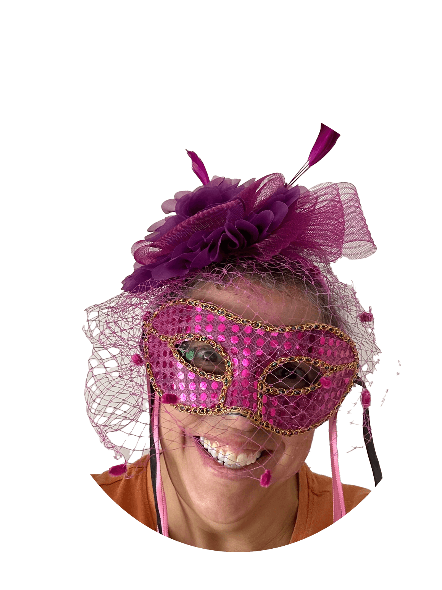

Distributor of Tricks and Treats
Shari Marie King

Shari Marie King
Contact;
sking@ salemwitchproj.gov;
1616 Mockingbird Lane;
Transylvania, Romania 06660;
606-666-DEAD(3323)
Educational Background
School of Hard Knocks 1970-?;
Whats Amatter U 2001-?;
Hogwarts Alumni 1997-2007
Affiliations
Salem Witch Project;
Wiccan Chapter #79;
Munster Support Group
>
Work History
Halloween Horror Houses presented by Windsor Chamber of Commerce:
Collaborated and designed a dental office out of a bathroom;
A costumed actor dressed as a bloodied dentist would rev a drill at visitors passing by. A second actor festooned in bloody drool would howl in pain. 2003;
Created a morgue inside an office space. The morgue appeared as a wall of labeled drawers.;
Costumed (dead) actors were encouraged to lie in the open drawers to frighten visitors as they passed through the room. 2004;
Created a Freak Show. Developed and costumed several acts that included Swamp Thing, Mole boy, and Pumpkin Head;
The costumed characters performed on top of desks partitioned off with theatrical curtains;
A barker led visitors to the different stages to be entertained with frolicking freakdom. 2005